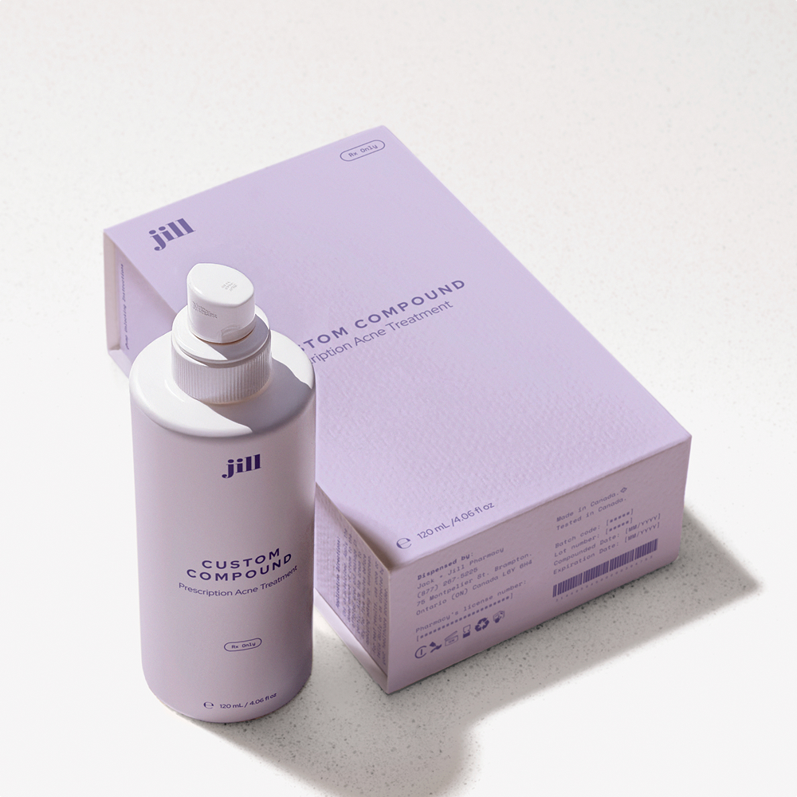
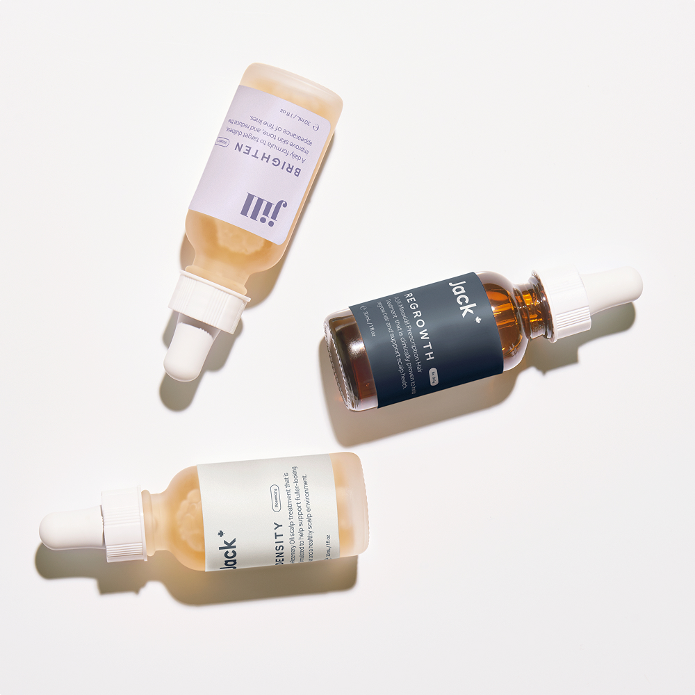
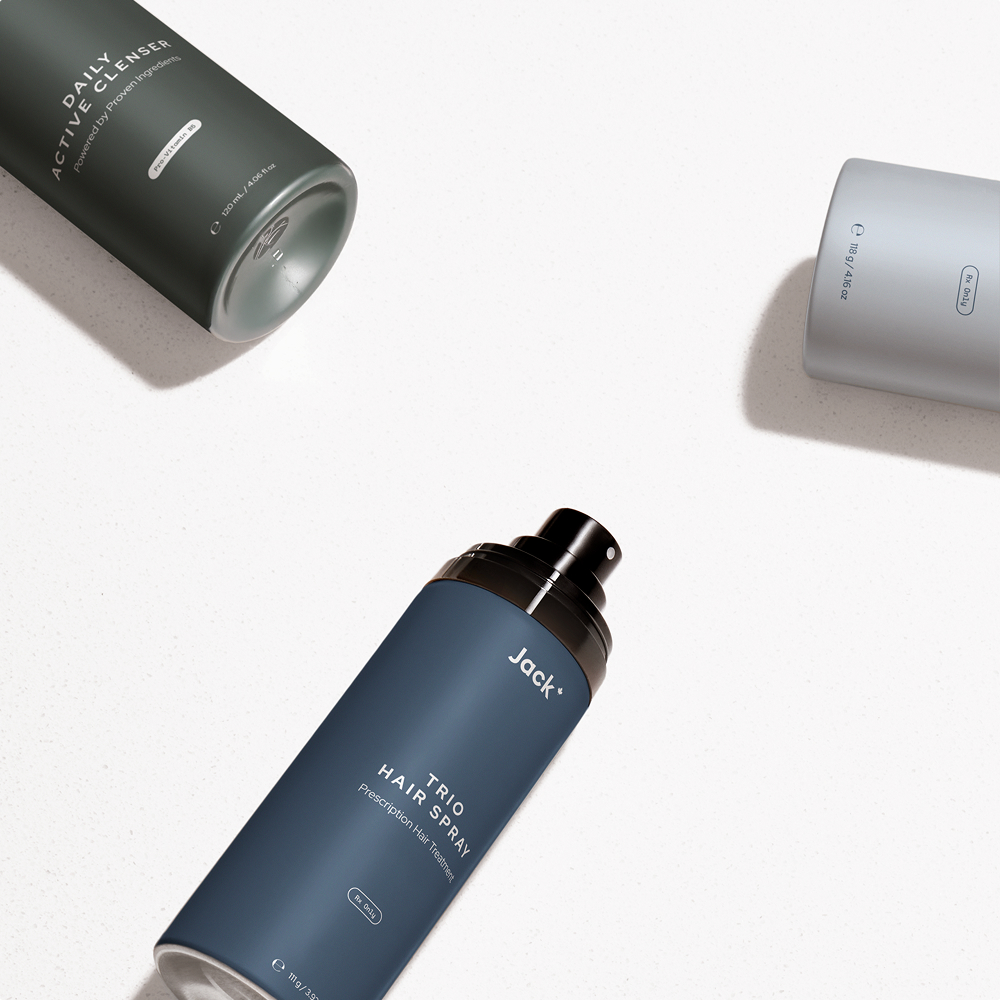
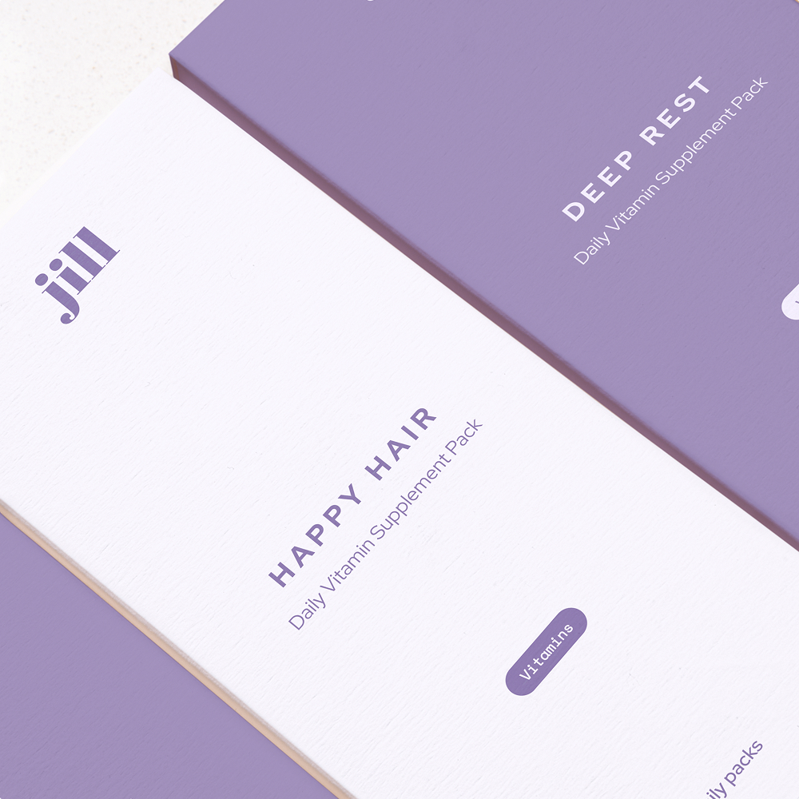
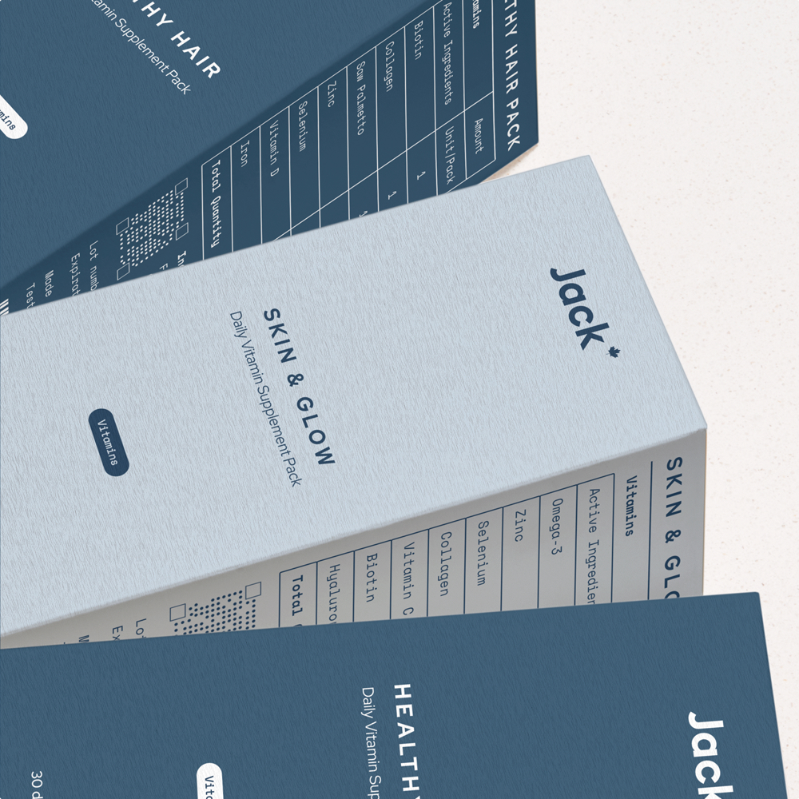
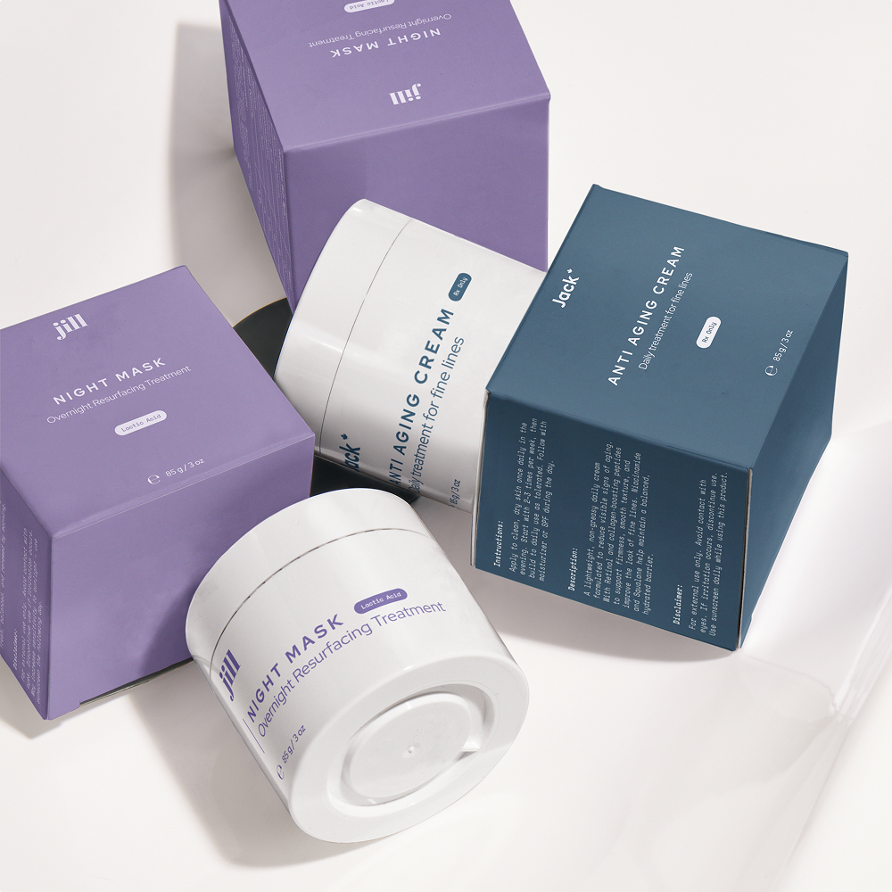

In direct-to-consumer health, packaging design is secondary to medical information. Jack & Jill also had to meet strict regulatory guidelines that dictated what information must appear at each level of packaging. The goal was to uphold those standards while creating a system that looked and felt like their brand, with packaging that could sit comfortably beside cosmetic products on the bathroom shelf.
The new design system met strict regulatory requirements while giving Jack & Jill the polish of a consumer brand. It built trust by communicating legitimacy and safety in a regulated space, increased clarity through a hierarchy and messaging system that reduced confusion at the point of decision, and elevated positioning by creating a cohesive identity that inspired loyalty among patients and confidence in the brand. The result was a scalable framework that worked seamlessly across prescription, OTC, and vitamin lines, enabling Jack & Jill to compete as a credible player in the wellness market.
I directed creative across brand and packaging, redesigning primary, secondary, and tertiary systems from the ground up. My role was to define the line between regulatory requirements and brand identity across prescription products, OTC lines, and vitamin packs. I worked closely with the pharmacy team to uphold strict compliance standards while still creating a design system that felt approachable and consumer-friendly. The framework was built to scale as Jack & Jill grew, ensuring consistency across product lines and future expansions. This process sharpened my ability to design for regulated industries where clarity and trust are paramount, to translate constraints into creative systems that support business growth, and to elevate consumer perception through packaging that connects brand voice with real-world compliance. These same skills now apply to MedTech, bio, and health companies looking to move from technical credibility to broad public adoption.